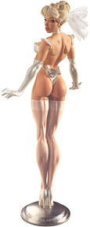
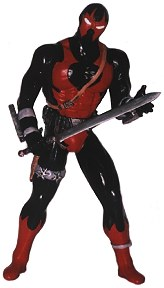

arage
kits are little scuptures made by artists in small quantities
that you can build and paint yourself.
The place to find them is
Gremlins in the Garage!
arage
kits are little scuptures made by artists in small quantities
that you can build and paint yourself.
The place to find them is
Gremlins in the Garage!
Watch out! There are artistic little gremlins banging away creating things in garages all over the world! And you just stumbled into the center of their web! Those gremlins are figure model kit sculptors, producers, and builders who pour their souls over a lump of clay to breathe life into it. Often alone in their garages and workshops, their visions are created out of a passion for their subjects.
We hope to give you a taste of this community and entice you to follow the paths we have created that will transform you into...

 | |

|
Midget Monsters
What happens when you want to express the essence of a classic monster? This midget lycanthrope says it all! |
| |

|
Obscure Classics
Ever wonder if Imhotep's Princess might follow him out of the tomb? Here is what Princess Ananka might have looked like while pursuing the love of her life. "I have come - a reduplicated perfect..."
|
| |
|  | Nice Girls
Original female designs must be one of the hardest art forms to achieve. No one knows what a monster should look like, but we are all expert judges of the female form. What better way to worship the female mystique than through sculpture...
|
| |
|  | Modern Heros
Come one step closer to bringing your heros to life. Create a physical icon to represent the notions that intrigue you the most...
|
| |

|
Ancient Legends
Once, ancient legends could only be remembered through the spoken word passed from one generation to the next. Now we can honor them in a new form...
|
| |

|
Scratch Builds
Scratch builds are the heart and soul of garage kits. That is where it all begins, with the people who have the passion to create something from deep within. Just so that it will exist...
|
| |
Do you feel your skin starting to get slippery? Are your teeth becoming sharper? Is your mind bubbling over with mischevious thoughts? Then complete the transformation! Follow the final path to Gremlins in the Garage!
You will never have to feel the pain of the sunlight again...
The Gremlins in the Garage webzine is a production of Firefly Design. If you have any questions or comments please get in touch.
Copyright © 1994-2004 Firefly Design.